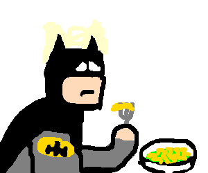

Cool facts
The missile knows where it is at all times. It knows this because it knows where it isn't. By subtracting where it is from where it isn't, or where it isn't from where it is (whichever is greater), it obtains a difference, or deviation. The guidance subsystem uses deviations to generate corrective commands to drive the missile from a position where it is to a position where it isn't, and arriving at a position where it wasn't, it now is. Consequently, the position where it is, is now the position that it wasn't, and it follows that the position that it was, is now the position that it isn't. In the event that the position that it is in is not the position that it wasn't, the system has acquired a variation, the variation being the difference between where the missile is, and where it wasn't. If variation is considered to be a significant factor, it too may be corrected by the GEA. However, the missile must also know where it was. The missile guidance computer scenario works as follows. Because a variation has modified some of the information the missile has obtained, it is not sure just where it is. However, it is sure where it isn't, within reason, and it knows where it was. It now subtracts where it should be from where it wasn't, or vice-versa, and by differentiating this from the algebraic sum of where it shouldn't be, and where it was, it is able to obtain the deviation and its variation, which is called error.

Albion Online é um MMORPG sandbox em que você escreve sua própria história, em vez de seguir um caminho pré-determinado. Explore um vasto mundo aberto que consiste de 5 ecossistemas únicos. Tudo o que você faz gera um impacto no mundo, já que em Albion, a economia é conduzida pelo jogador. Cada peça de equipamento é construída por jogadores a partir dos recursos obtidos por eles. O equipamento que você usa define quem você é. Ir de cavaleiro para feiticeiro é tão fácil quanto trocar a armadura e a arma, ou uma combinação das duas. Aventure-se no mundo aberto e enfrente os habitantes e as criaturas de Albion. Saia em expedições ou entre em masmorras para enfrentar inimigos ainda mais desafiadores. Enfrente outros jogadores em confrontos do mundo aberto, lute pelo controle de territórios ou cidades inteiras em batalhas táticas em grupo. Relaxe descansando em sua ilha pessoal, onde você pode construir uma casa, cultivar alimentos e criar animais. Junte-se à uma guilda, tudo fica mais divertido quando se trabalha em equipe. Entre hoje mesmo no mundo de Albion, e escreva sua própria história.
Back to top of page